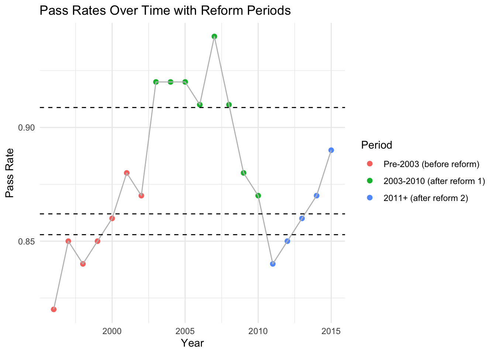

par(mfrow =c(2, 2))plot(x$fitted_prob, x$resid_resp,main ="Residuals vs Fitted",xlab ="Fitted Values", ylab ="Residuals")abline(h =0, lty =2)qqnorm(x$resid_resp)qqline(x$resid_resp)plot(x$Pct, x$fitted_prob,main ="Observed vs Fitted",xlab ="Observed", ylab ="Fitted")abline(0,1,lty=2)plot(x$Year, x$resid_resp,main ="Residuals over Time",xlab ="Year", ylab ="Residuals")abline(h=0,lty=2)

par(mfrow =c(1,1))
ggplot(x, aes(x = Year)) +geom_point(aes(y = Pct), color ="blue", size =2, alpha =0.7) +geom_line(aes(y = fitted_prob), color ="red", size =1.2) +geom_vline(xintercept =c(2003, 2011), linetype ="dashed", color ="gray50", alpha =0.8) +annotate("text", x =2003, y =0.945, label ="Reform 1", angle =90, vjust =-0.5) +annotate("text", x =2011, y =0.945, label ="Reform 2", angle =90, vjust =-0.5) +labs(title ="Medical Residents Exam Pass Rates",subtitle ="Observed vs Fitted with Beta-Binomial Model",y ="Pass Rate",x ="Year") +scale_y_continuous(limits =c(0.8,0.95), labels = scales::percent) +theme_minimal(base_size =14) +theme(plot.title =element_text(hjust =0.5, face ="bold"),plot.subtitle =element_text(hjust =0.5),axis.title =element_text(face ="bold"))
Warning: Using `size` aesthetic for lines was deprecated in ggplot2 3.4.0.
ℹ Please use `linewidth` instead.
The baseline log-odds of passing during the pre-reform era (tp1) are represented by the intercept for mu. While the coefficient for timeperiodtp3 shows a smaller increase that is not statistically significant at conventional levels, the coefficient for timeperiodtp2 shows a statistically significant increase in pass rates in comparison to the baseline. There is only slight overdispersion in the data, as indicated by the dispersion parameter (rho), which is small and not statistically significant.
With an AIC of 262.62, the beta-binomial model significantly outperformed the standard binomial model, which had an AIC of 714.13. This demonstrates that the beta-binomial model fits data much better and accounts for overdispersion.
According to residual diagnostics, the model does a good job of fitting the data. The QQ plot suggests approximate normality, while the residuals versus fitted values plot displays no discernible pattern. The model’s ability to capture observed trends is confirmed by the close alignment of observed and fitted pass rates along the identity line. The lack of a discernible temporal trend in the residuals plotted over time supports the adequacy of the model.
Although the predicted probability indicates a modest increase, the analysis shows that the second reform (2011) did not result in a significant change, while the first reform (2003) had a statistically significant positive effect on exam pass rates. Because it took overdispersion into account and produced more accurate estimates, the beta-binomial model was better than the standard binomial. All things considered, this modeling technique effectively manages data variability while enabling a quantitative evaluation of the effects of policies on exam results.
# linear model fit linear_model <-lm(Pct ~ timeperiod, data = x, weights = N)tidy(linear_model, conf.int =TRUE)
par(mfrow=c(1,1))# can do aic comparing with / without time period (chat?)# i will finish writing the confidence interval stuff later
x$fitted_lm <-predict(linear_model, newdata = x)ggplot(x, aes(x = Year)) +geom_point(aes(y = Pct), color ="blue") +geom_line(aes(y = fitted_lm), color ="red") +geom_vline(xintercept =c(2003, 2011), linetype ="dashed", color ="black", alpha =0.7) +annotate("text", x =2003, y =0.945, label ="Reform 1", angle =90, vjust =-0.5) +annotate("text", x =2011, y =0.945, label ="Reform 2", angle =90, vjust =-0.5) +labs(title ="Observed vs Fitted with Weighted Linear Regression",y ="Pass Rate",x ="Year") +scale_y_continuous(limits =c(0.8, 0.95), labels = percent) +theme_minimal(base_size =14) +theme(plot.title =element_text(hjust =0.5),plot.subtitle =element_text(hjust =0.5),axis.title =element_text() )
Through conducting a weighted linear regression where the number of people who took the test per year was taken into consideration so they would count more, we could see that the baseline average pass rate before the first reform is represented by the intercept at about 85.3%. The coefficient for the second time period from 2003–2010 represents a statistically significant increase of about 5.6% compared to the baseline, while the coefficient for the third time period from 2011–2015 shows only a modest increase of about 1%. This implies that the first reform had a significant increase in pass rates, showing the reform was impactful and positively impacted exam results, and the second reform in 2011 comparatively did not lead to a clear change relative to pre-2003 levels.
The residuals versus fitted values show no obvious pattern, the Q-Q plot suggests approximate normality, and the scale-location and leverage plots reveal no influential outliers.